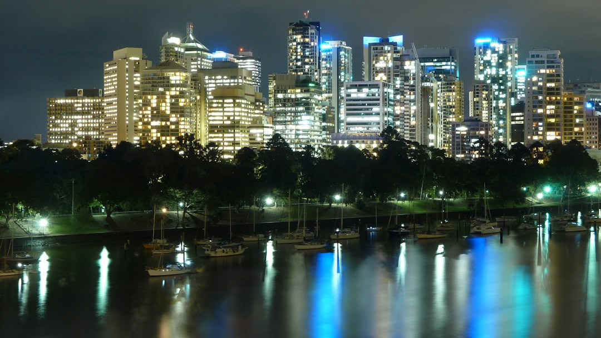

For South Brisbane electrical work, the useful starting point is a clear job brief, not a guessed price. Note whether the issue is a current fault or a planned change, record the affected rooms or intended load, add suburb and property details, and treat electric shock, fire or fallen powerlines as a 000 matter. Published guidance from the provider says website enquiries are for planned work and non-urgent faults, not emergency response.
For homeowners and tenants comparing electrical services south brisbane options, the practical question is how to describe the fault, property and access clearly enough for a licensed contractor to assess the next step.
Electrical Services South Brisbane Explained
Electrician South Brisbane frames the first enquiry around the situation at the property: either something has stopped working, or a change is being planned. That split is useful because a recurring trip, a failed fitting and a new circuit need different information before anyone can sensibly discuss scope.
For a fault, write down what changed, which rooms or fittings are affected, whether the trip repeats, and whether there are sounds, smell or water exposure. The source page also says to keep clear of damaged equipment and to use the emergency route if people are at risk.
For planned work, describe the new fitting or load, the existing circuit if known, the property type and access. A ceiling fan, replacement outlet and new circuit may sound like small jobs, but the right questions differ once ceiling support, controls, location and intended use are considered.
Who this applies to
This guide is for ordinary enquiries in South Brisbane and nearby inner-south areas where a reader wants to prepare a useful brief before asking for an assessment. It suits apartment occupants, householders, landlords, shop operators and office tenants who can describe the issue, but still need a licensed electrical professional to inspect, test and scope the work.
- Use the emergency path for electric shock, fire or fallen powerlines.
- Use an enquiry for planned work and non-urgent faults.
- Ask about authority where a tenancy, body corporate, shared switchboard or building access issue may affect the job.
South Brisbane includes apartments, homes and mixed-use premises. The source page notes that building access, tenancy authority and the affected area can change the questions to ask about a job, so those details belong in the first message rather than being discovered late.
What to compare in a quote conversation
Electrical services south brisbane quote comparisons can become misleading when one response includes diagnosis, materials and testing while another only names the visible repair. For switchboard work, the published guide says to ask which existing circuits were assessed, whether new protection is included, what testing follows, and how a change of scope will be agreed.
For a smaller repair, separate the diagnosis from optional improvements. If one electrician recommends a board change and another recommends a narrower repair, ask each to explain the finding that led to the recommendation. A tripping safety switch does not automatically mean the switchboard needs replacement, according to the source page, because the affected circuit and equipment should be investigated first.
A useful comparison list includes inspection, materials, circuit or fitting scope, testing and the approval process for extra work. The related South Brisbane electrical services guide gives another crawlable summary of the same planning theme.
Faults, fittings and switchboards need different notes
The source page organises common jobs into fault finding, switchboard upgrades, safety switches, power points and circuits, lighting and ceiling fans, and smoke alarms. Use that as a sorting tool, then add the details that make the category useful.
For fault finding, record the affected rooms, the circuit if it is labelled, and any pattern such as a trip after a particular appliance is used. For power points and circuits, say whether the request is a replacement outlet, a better position or a new circuit for a specific load. For lighting and ceiling fans, note access and whether controls are part of the change.
Smoke alarm obligations depend on the property and occupancy, according to the provider's published text. Rather than assuming a rule from memory, ask the contractor to confirm the relevant Queensland requirement and the provider scope before approving work.
Preparing the enquiry before photos
The enquiry form asks for name, phone, email, suburb or postcode, and a description of the work needing attention. It also asks readers to include access and nearby structures. Photos can be provided later if a provider asks for them, so the first written description still needs to stand on its own.
Do not treat form submission as a booking confirmation. The source page says submitting the form does not confirm provider availability, timing or acceptance of the work. It also states that details are used to assess and process the enquiry, and may be shared with independent service providers who may contact the enquirer about the job.
A concise brief might read: the kitchen lights trip the safety switch when turned on, the property is an apartment in South Brisbane, access is through a managed entry, and the tenant can be home after approval from the agent. That format gives the assessor symptom, property type, access and authority in one place.
- Separate urgent danger. If there is electric shock, fire or fallen powerlines, call 000 rather than using a website enquiry.
- Define the job type. State whether the issue is a present fault, a planned fitting change, a circuit request, a switchboard question or a smoke alarm matter.
- Describe the property. Include suburb or postcode, property type, access limits, tenancy or body corporate authority issues and the affected area.
- Ask about scope. Before comparing prices, ask what inspection, materials, circuit work, testing and change approval are included.
| Situation | Information to prepare | Next question to ask |
|---|---|---|
| Something has stopped working | Affected rooms, trip pattern, sounds, smell, water exposure, damaged equipment nearby | What inspection and testing are needed before a repair recommendation? |
| You are changing the property | New fitting or load, existing circuit, property type, access and authority | What is included in the scope, and how will extra work be approved? |
Common questions
Can a website enquiry dispatch emergency electrical help? No. The source page says its form is for planned work and non-urgent faults, not emergency response. For electric shock, fire or fallen powerlines, call 000.
Does a tripping safety switch mean a switchboard upgrade is needed? Not necessarily. The published guidance says a licensed person should investigate the affected circuit and equipment before recommending a board change.
What should be included when asking about electrical services in South Brisbane? Include the symptom or planned change, suburb or postcode, property type, access limits and any safety concerns. For planned work, also describe the intended load or fitting and the existing circuit if known.
What makes two electrical quotes hard to compare? They may include different levels of inspection, materials, circuit work, testing and change-of-scope approval. Ask each electrician to explain what they found and what the quote includes.
This guide covers preparing a practical brief for South Brisbane electrical faults, planned work, quote comparison and non-urgent enquiries.